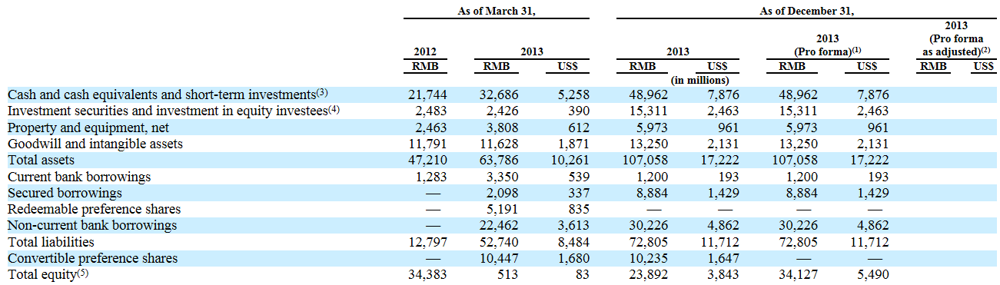

返回主页
Summary Consolidated Balance Sheet Data

(1) Reflects the automatic conversion of all of our convertible preference shares into 91,243,243 ordinary shares concurrently with the completion of this offering.
(2) Reflects (i) the automatic conversion of all of our convertible preference shares into 91,243,243 ordinary shares concurrently with the completion of this offering and (ii) the sale of ordinary shares in the form of ADSs by us in this offering at an assumed initial public offering price of US$ per ADS, the mid-point of the estimated range of the initial public offering price shown on the front cover of this prospectus, after deducting the estimated underwriting discounts and commissions and estimated offering expenses payable by us.
(3) Includes both cash and cash equivalents and short-term investments, which comprise fixed deposits with original maturities of between three months and one year.
(4) Includes both current and non-current investment securities and investment in equity investees.
(5) The decrease from March 31, 2012 to March 31, 2013 was primarily due to the repurchase of our ordinary shares from Yahoo in September 2012 and the privatization of Alibaba.com, partially offset by the issuance of ordinary shares to finance the repurchase.
version:1.0; jobnet@188.com © retter2012.com